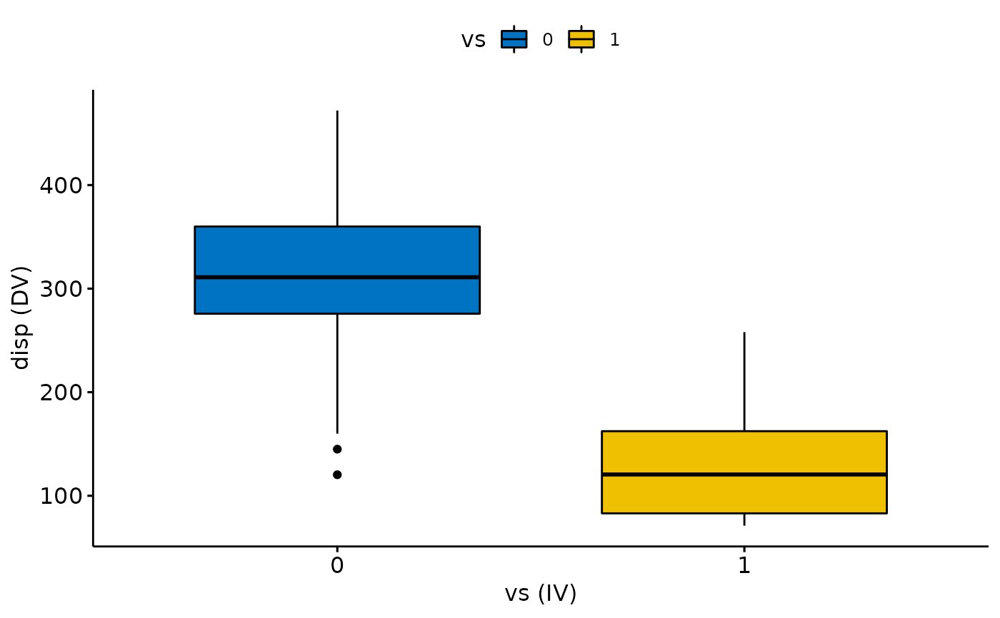
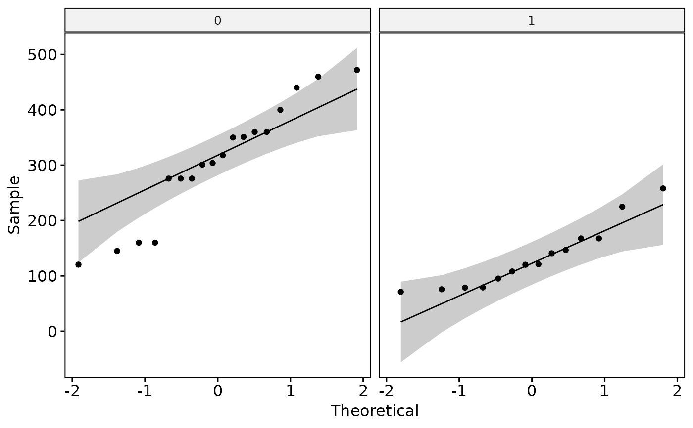
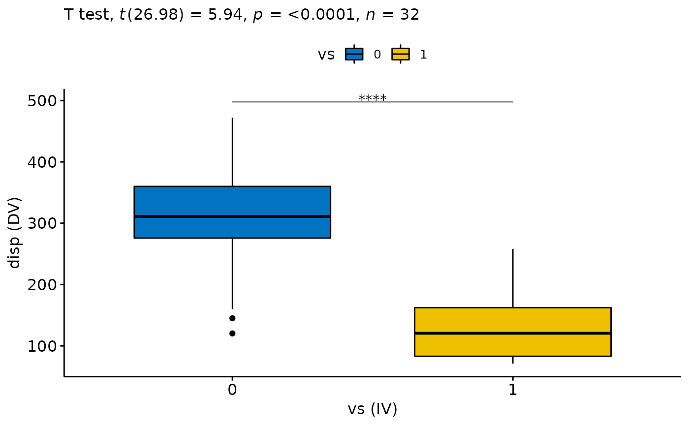
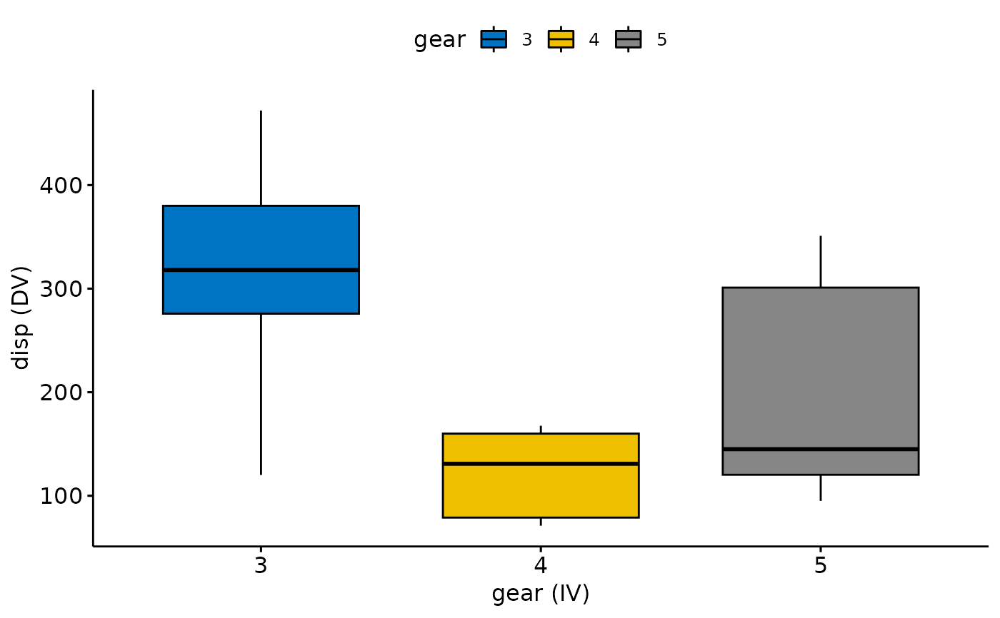
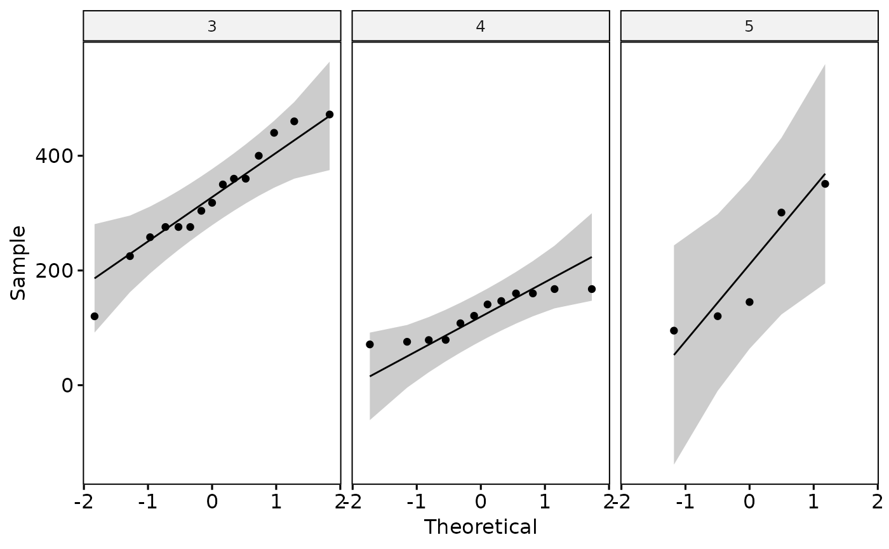
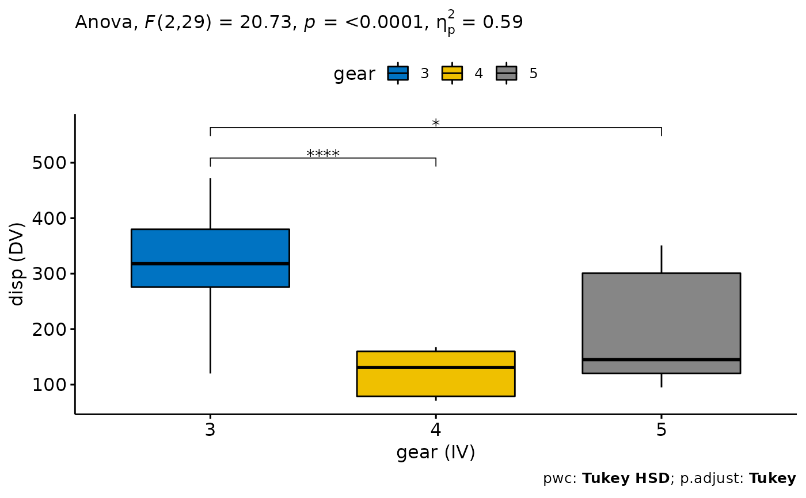

Conduct a comparison for independent sample means - either t-test or one-way ANOVA
Source:R/independent_sample_means.R
independent_sample_means.RdA convenience function, that provides and easy to use wrapper for a step-by-step comparison of means from independent groups. The steps that are run for each analysis are:
0. Determination of groupsFor 2 groups conduct independent sample t-test. For more than 2 groups an ANOVA is conducted instead1. Detect outliers and extreme valuesincluding boxplots to identify those values. Utilizes identify_outliers2. Calculate descriptive statisticsfor each groups, self-explanatory.3. Check normal distribution (assumptions)uses a formal test (Shapiro-Wilk) as well as a visual inspection method (qqplots). Carefully judge this step, as the function has no default handling for non-normality. Options include check the literature if the test in your scenario is robust for violations (see also central limit theorem and Glass, 1972), or switch to a non-parametric alternative.4. Check homogeneity of variances (assumption)for this purpose a levene test will be conducted. A significant (by convention p < .05) result indicates the H0 (of equal variances) must be disregarded. Depending on the result the student t-test with pooled variance / "normal" ANOVA will be used. If there is heterogeneity of variances (i.e., unequal variances) the Welch correction of the degrees of freedom will be used instead.5. The test (t-Test or ANOVA)will be conducted, including Post-Hoc Comparisons and a calculation of an effect size. Additionally the ggpubr package is used together with rstatix to display a Boxplot including the result of the hypothesis test.
This function is a mere wrapper for the excellent tutorials provided by Alboukadel Kassambara over at Datanovia. See the original Guide for the t-test and for the ANOVA. It just packages all the steps in one function for convenience
Usage
independent_sample_means(
data,
dv,
iv,
alternative = c("two.sided", "less", "greater"),
stepwise = TRUE,
verbose = TRUE,
add = "jitter",
fill = iv,
palette = "jco",
...
)Arguments
- data
The dataset containing the variables for the table1 call (all terms from the str_formula must be present)
- dv
The name of the dependend variable as character.
- iv
The name of the independend variable as character.
- alternative
In case of only two groups one can specify if a directed hypothesis should be tested. Default is "two.sided"
- stepwise
Boolean, default = TRUE, if TRUE the analysis is carried out in small steps, after each step (e.g. test for normality), the output is printed is to the console and a user input is required. For a list of the steps see the description
- verbose
Boolean, default = TRUE, if TRUE the output of each step is printed to the console
- add
Additions to the boxplot, see also ggboxplot. I primarily recommend to use either "none" or "jitter"
- fill
False for no filled colors
- palette
Color palette for the boxplot, see also ggboxplot.
- ...
(Optional), Additional arguments that can be passed to
t_test(e.g., fontsize, font ...), toserialNextor toggboxplot
Value
A list with all results of the check for the assumptions as well as the hypothesis test itself.
Examples
t_test <- independent_sample_means(mtcars, dv = "disp", iv = "vs", add = "none")
#> [1] "Recognizing k = 2 groups"
#> [1] "1) Checking for extreme values"
#> # A tibble: 2 × 4
#> vs disp is.outlier is.extreme
#> <fct> <dbl> <lgl> <lgl>
#> 1 0 120. TRUE FALSE
#> 2 0 145 TRUE FALSE

#> 2) Continue with Descriptives?
#> # A tibble: 2 × 5
#> vs variable n mean sd
#> <fct> <fct> <dbl> <dbl> <dbl>
#> 1 0 disp 18 307. 107.
#> 2 1 disp 14 132. 56.9
#> 3) Continue with Normality Check?
#> # A tibble: 2 × 4
#> vs variable statistic p
#> <fct> <chr> <dbl> <dbl>
#> 1 0 disp 0.940 0.288
#> 2 1 disp 0.897 0.103
#> Warning: The following aesthetics were dropped during statistical transformation: sample
#> ℹ This can happen when ggplot fails to infer the correct grouping structure in
#> the data.
#> ℹ Did you forget to specify a `group` aesthetic or to convert a numerical
#> variable into a factor?
#> Warning: The following aesthetics were dropped during statistical transformation: sample
#> ℹ This can happen when ggplot fails to infer the correct grouping structure in
#> the data.
#> ℹ Did you forget to specify a `group` aesthetic or to convert a numerical
#> variable into a factor?
#> Warning: The following aesthetics were dropped during statistical transformation: sample
#> ℹ This can happen when ggplot fails to infer the correct grouping structure in
#> the data.
#> ℹ Did you forget to specify a `group` aesthetic or to convert a numerical
#> variable into a factor?
#> Warning: The following aesthetics were dropped during statistical transformation: sample
#> ℹ This can happen when ggplot fails to infer the correct grouping structure in
#> the data.
#> ℹ Did you forget to specify a `group` aesthetic or to convert a numerical
#> variable into a factor?

#> 4) Continue with check Homogeneity of Variances?
#> # A tibble: 1 × 4
#> df1 df2 statistic p
#> <int> <int> <dbl> <dbl>
#> 1 1 30 4.30 0.0467
#> 5) Continue with the Test, Effect Size and Final Plot?
#> # A tibble: 1 × 13
#> .y. group1 group2 n1 n2 statistic df p p.sig…¹ y.pos…² groups
#> <chr> <chr> <chr> <int> <int> <dbl> <dbl> <dbl> <chr> <dbl> <name>
#> 1 disp 0 1 18 14 5.94 27.0 2.48e-6 **** 498. <chr>
#> # … with 2 more variables: xmin <dbl>, xmax <dbl>, and abbreviated variable
#> # names ¹p.signif, ²y.position
#> # A tibble: 1 × 7
#> .y. group1 group2 effsize n1 n2 magnitude
#> * <chr> <chr> <chr> <dbl> <int> <int> <ord>
#> 1 disp 0 1 2.04 18 14 large

ANOVA <- independent_sample_means(mtcars, dv = "disp", iv = "gear", add = "none")
#> [1] "Recognizing k = 3 groups"
#> [1] "1) Checking for extreme values"
#> [1] gear disp is.outlier is.extreme
#> <0 rows> (or 0-length row.names)

#> 2) Continue with Descriptives?
#> # A tibble: 3 × 5
#> gear variable n mean sd
#> <fct> <fct> <dbl> <dbl> <dbl>
#> 1 3 disp 15 326. 94.9
#> 2 4 disp 12 123. 38.9
#> 3 5 disp 5 202. 115.
#> 3) Continue with Normality Check?
#> # A tibble: 3 × 4
#> gear variable statistic p
#> <fct> <chr> <dbl> <dbl>
#> 1 3 disp 0.964 0.761
#> 2 4 disp 0.858 0.0456
#> 3 5 disp 0.856 0.214
#> Warning: The following aesthetics were dropped during statistical transformation: sample
#> ℹ This can happen when ggplot fails to infer the correct grouping structure in
#> the data.
#> ℹ Did you forget to specify a `group` aesthetic or to convert a numerical
#> variable into a factor?
#> Warning: The following aesthetics were dropped during statistical transformation: sample
#> ℹ This can happen when ggplot fails to infer the correct grouping structure in
#> the data.
#> ℹ Did you forget to specify a `group` aesthetic or to convert a numerical
#> variable into a factor?
#> Warning: The following aesthetics were dropped during statistical transformation: sample
#> ℹ This can happen when ggplot fails to infer the correct grouping structure in
#> the data.
#> ℹ Did you forget to specify a `group` aesthetic or to convert a numerical
#> variable into a factor?
#> Warning: The following aesthetics were dropped during statistical transformation: sample
#> ℹ This can happen when ggplot fails to infer the correct grouping structure in
#> the data.
#> ℹ Did you forget to specify a `group` aesthetic or to convert a numerical
#> variable into a factor?
#> Warning: The following aesthetics were dropped during statistical transformation: sample
#> ℹ This can happen when ggplot fails to infer the correct grouping structure in
#> the data.
#> ℹ Did you forget to specify a `group` aesthetic or to convert a numerical
#> variable into a factor?
#> Warning: The following aesthetics were dropped during statistical transformation: sample
#> ℹ This can happen when ggplot fails to infer the correct grouping structure in
#> the data.
#> ℹ Did you forget to specify a `group` aesthetic or to convert a numerical
#> variable into a factor?

#> 4) Continue with check Homogeneity of Variances?
#> # A tibble: 1 × 4
#> df1 df2 statistic p
#> <int> <int> <dbl> <dbl>
#> 1 2 29 2.64 0.0888
#> 5) Continue with the Test, Effect Size and Final Plot?
#> ANOVA Table (type II tests)
#>
#> Effect DFn DFd F p p<.05 pes
#> 1 gear 2 29 20.734 2.56e-06 * 0.588
#> # A tibble: 3 × 13
#> term group1 group2 null.value estim…¹ conf.…² conf.…³ p.adj p.adj…⁴ y.pos…⁵
#> <chr> <chr> <chr> <dbl> <dbl> <dbl> <dbl> <dbl> <chr> <dbl>
#> 1 gear 3 4 0 -203. -282. -125. 1.64e-6 **** 509.
#> 2 gear 3 5 0 -124. -229. -19.0 1.8 e-2 * 563.
#> 3 gear 4 5 0 79.5 -28.6 188. 1.82e-1 ns 618.
#> # … with 3 more variables: groups <named list>, xmin <dbl>, xmax <dbl>, and
#> # abbreviated variable names ¹estimate, ²conf.low, ³conf.high, ⁴p.adj.signif,
#> # ⁵y.position
